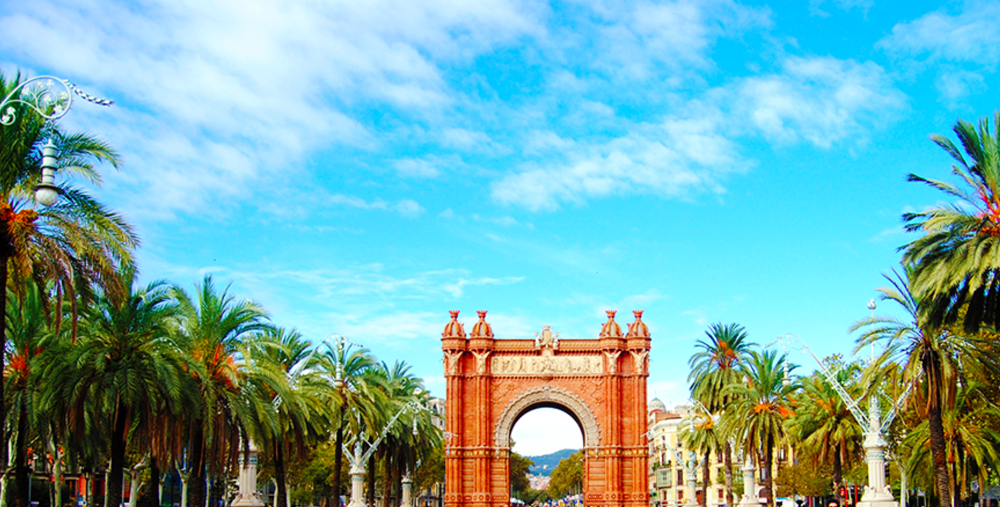

Ⓐ RCO DE
TRIUNFO

☰
El Arco de Triunfo o Arc del Triomf es un monumento de la ciudad de Barcelona, situado entre el paseo Lluis Companys y el paseo
San Juan, fue diseñado por el arquitecto Josep Vilaseca i Casanovas como entrada principal a la exposición universal de Barcelona en 1888.
Tiene una altura de 30 metros y la estructura es de ladrillo visto de inspiración neomudéjar. Consiste en dos pilastras macizas unidas
por un arco, rematadas por una superestructura plana o ático.
Josep Reynés esculpió en la parte delantera del Arco "Barcelona rep les nacions". Josep Llimona esculpió
en la parte trasera el reparto de recompensas de los participantes de la exposición. En el lado derecho Antoni Vilanova esculpió alegorías
a las Ciencias y las Artes. Manel Fuxá y Pere Carbonell crearon 4 esculturas femeninas para la obra: las Famas.
Aunque los arcos de triunfo son normalmente monumentos construidos para conmemorar una victoria militar, el de Barcelona no
cumple esta máxima ya que es una construcción puramente civil marcada por el progreso artístico, científico y económico.
Este Arco del Triunfo ha sido utilizado como meta en alguna ocasión para algunas de las carreras pedestres populares más importantes
de Barcelona, como el Jean Bouin o Martón de Barcelona. El Arco fue restaurado en 1990.